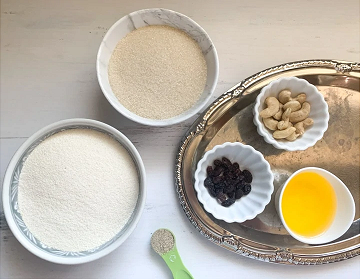

Welcome to traditonal kitchen, In this blog we are going to see rava laddu preparation.
Rava laddu origin is from south india especially karnataka. It is traditionally made
during Indian festivals like Ganesh Chaturthi, Navaratri, Diwali and Sankranti. It
has lots of health benefits like Rava is rich with minerals like magnesium and iron
which helps reduce blood pressure and supports growth of red blood cells. Potassium
is good for kidney health. It is ideal to be included in a weight loss diet as it has
low fat, low sodium and zero levels of cholesterol.
RAVA LADDU
Ingredients:
White rava - 250g
Milk - 150ml
Sugar - 250g
Ghee - 2-3 spoon(for rosting the nuts)
Cashews and Raisins - each 5g
Cardamom powder - 1 table spoon

Preparation:
Start with frying cashews and raisins in ghee separately and take them out and keep aside.
Next in the same pan add rava and roast it while stirring continuously. You want the rava
to become light golden, but we don't want the rava to become brown or burn. The rava turns
light and aromatic.
Roasting the rava will take around 8-10 minutes and it is the most important step.
need to roast the rava well but not it be in raw. Then transfer the rava into a separate
plate and let it to be cool.
Take a bowl add roasted rava, sugar, cardamom powder, boiled milk and roasted cashews and
raisines along with the ghee then mix them with a spoon until it is all combined perfectly.
Now bind the mixture with hand into a laddu shape, If you not able to make the shape then
add one table spoon milk and try again.
Repeat the process to make all laddus.Now sweet and delicious rava laddu ready.
Tips:
the key to make good rava laddu is to fry the rava well on low to medium flame.
It should begin to smell good and aromatic also use a heavy bottom pan.
The main taste comes from crunchy rava in the ladoos. If you make it fine like flour,
The ladoos will stuck into your mouth while you eat.